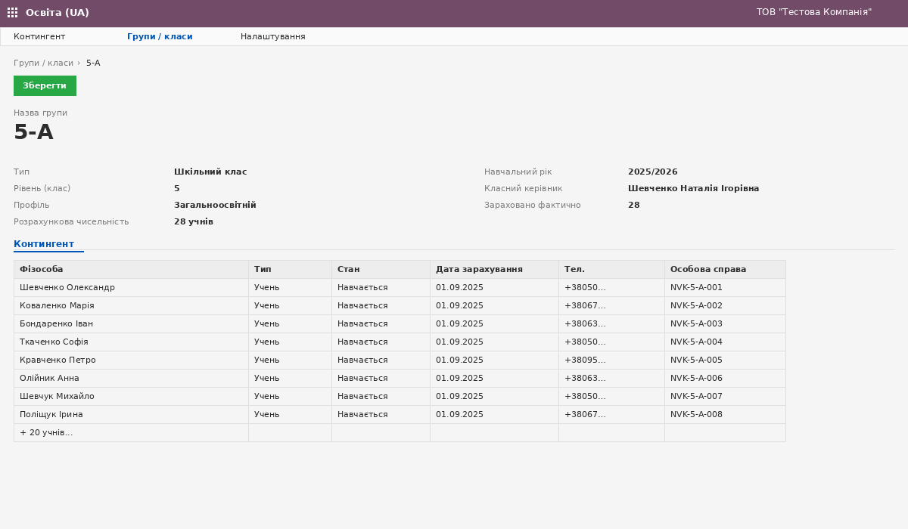
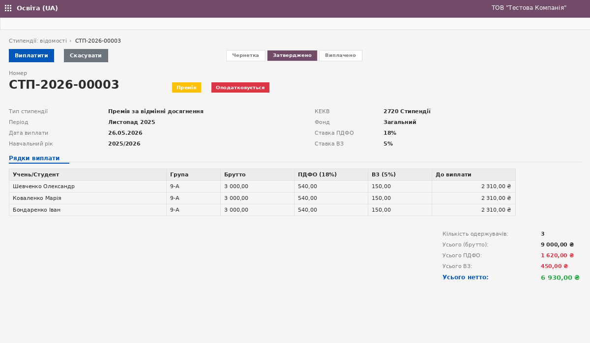

Контингент учнів/студентів, навчальні роки, групи, стипендії, дитяче харчування, обмін з ЄДЕБО — все на одній платформі.
applicant → enrolled → studying → on_leave ↔ studying → graduated
l10n_ua_education_edebo_xml_parse_custom() для специфічних форматів МОН

Преміальні стипендії автоматично розраховують ПДФО (18%) і військовий збір (5%) на кожному рядку. Натиснення «Виплатити» генерує проводку з аналітикою КЕКВ 2720 / Фонд / КПКВК.
Дошкільні заклади. Облік вихованців, груп, харчування.
Школи 1-11(12) класи. Класні керівники, табелі, стипендії.
Профтехосвіта. Групи за спеціальностями, виробнича практика.
Університети, інститути, коледжі. Курси, спеціальності, стипендії.
Стипендії автоматично створюють проводки з КЕКВ 2720 і потрапляють
до плану виконання кошторису через l10n_ua_budget.
Класні керівники, вчителі, тренери — через стандартний hr
+ надбудови l10n_ua_hr_* з військовим обліком і ПСП.